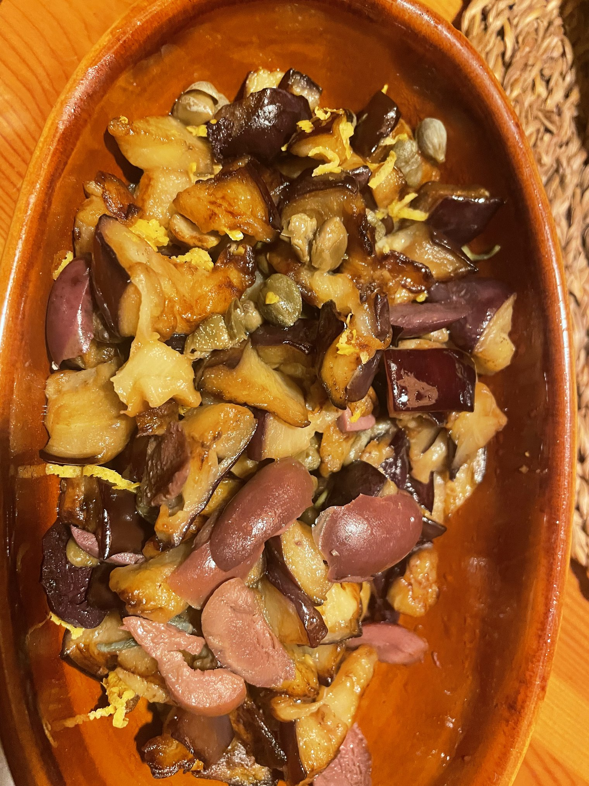

Berenjenas fritas con olivas negras, alcaparras y limón
Ingredientes
2×
- 2 berenjenas
- aceite de oliva
- sal
- 1 puñado de olivas negras
- 1 cda de alcaparras
- el zumo y la piel rallada de 1/2 limón

Preparación
Paso 1
Cortar 2 berenjenas en dados y freírlas en la sartén con aceite de oliva y sal hasta que estén doradas.
Paso 2
Añadir 1 puñado de olivas negras y 1 cda de alcaparras, y saltear 1min.
Paso 3
Fuera del fuego, aliñar con el zumo y la piel rallada de 1/2 limón.
Resumen
2 berenjenas
aceite de oliva
sal
Cortar freírlas
1 puñado de olivas negras
1 cda de alcaparras
Añadir saltear
el zumo y la piel rallada de 1/2 limón
aliñar